Selected work
Original static websites,
built to be opened.
Fourteen one-page demos for fictional businesses — kitchens, studios, and a neighbourhood energy installer. Every page is plain HTML and CSS, and where it helps, a little JavaScript.
- 14one-page demos
- Staticno CMS, no database
- Responsivedesktop to phone
01
Featured sites
The four core demos — a wood-fired kitchen, a solar installer, a pilates studio, and an editorial practice.
-
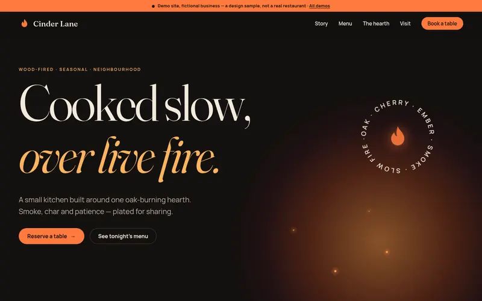
Cinder Lane
A wood-fired neighbourhood kitchen with a dark, editorial layout and a live-fire hearth.
Open demo -
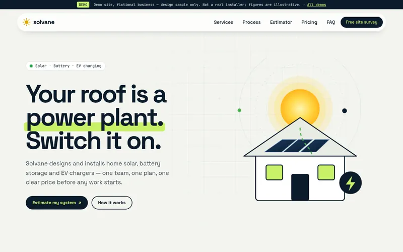
Solvane
A home solar, battery, and EV-charger installer with a clear process and a sample estimator.
Open demo -
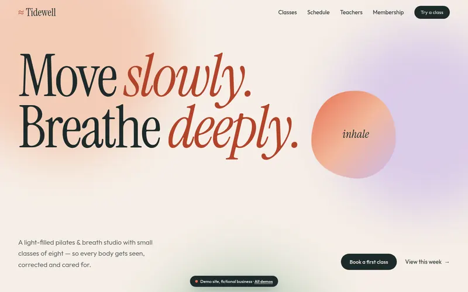
Tidewell
A pilates and breath studio with a soft, organic page — mesh, type, and unhurried motion.
Open demo -
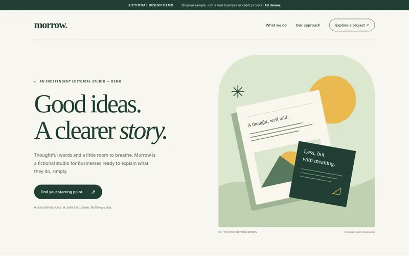
Morrow
A quiet typographic site for a fictional editorial studio — words, space, and a single illustration.
Open demo
02
Hospitality
Ten more restaurant and bar sites, each with its own visual direction — from a Swabian inn to a speakeasy.
-
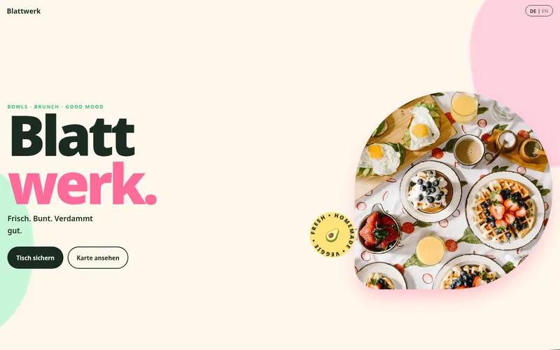
Blattwerk
Plant-forward brunch and bowls, set in a bright green, good-mood layout.
Open demo -
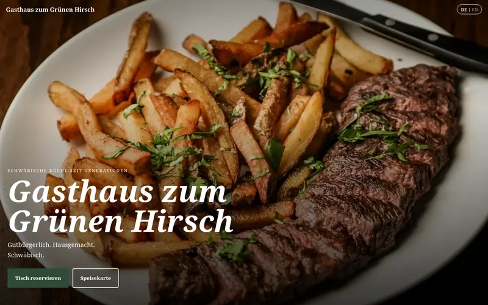
Gasthaus zum Grünen Hirsch
A traditional Swabian inn with a classic, warm, wood-and-linen treatment.
Open demo -
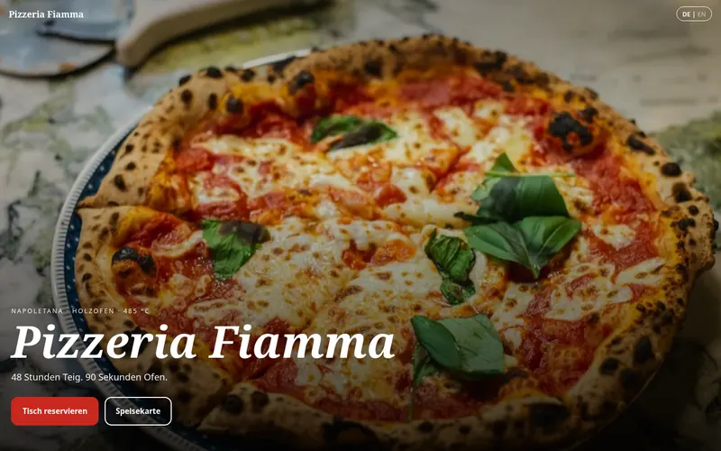
Pizzeria Fiamma
A Neapolitan pizzeria in tomato red and cream, with a trattoria accent.
Open demo -
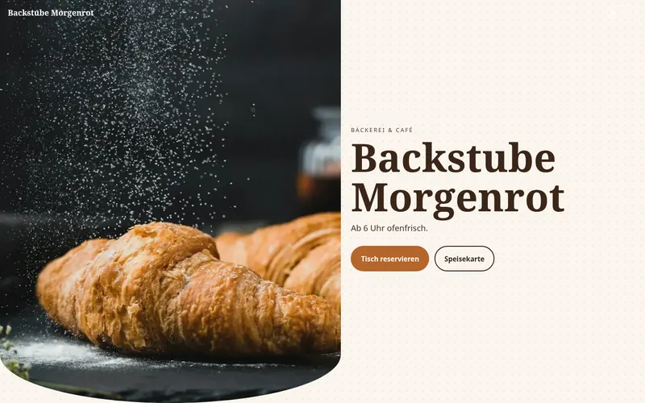
Backstube Morgenrot
A neighbourhood bakery and café with a handmade, paper-and-crust feel.
Open demo -
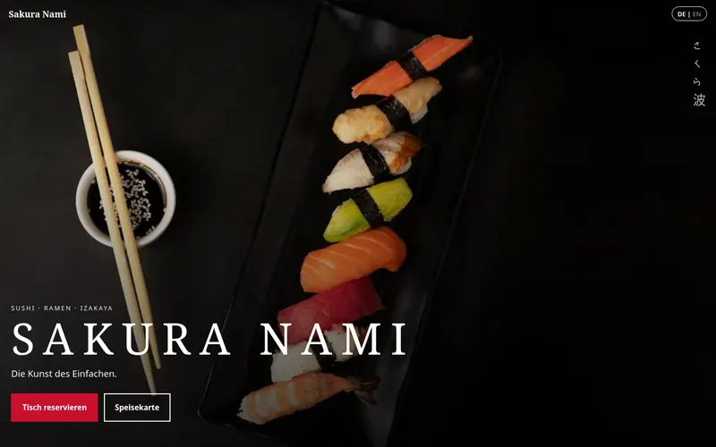
Sakura Nami
A Japanese sushi restaurant in ink and cherry blossom, with plenty of white space.
Open demo -
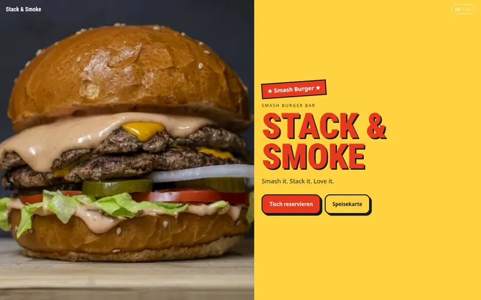
Stack & Smoke
A retro smash-burger bar in mustard yellow and ketchup red.
Open demo -
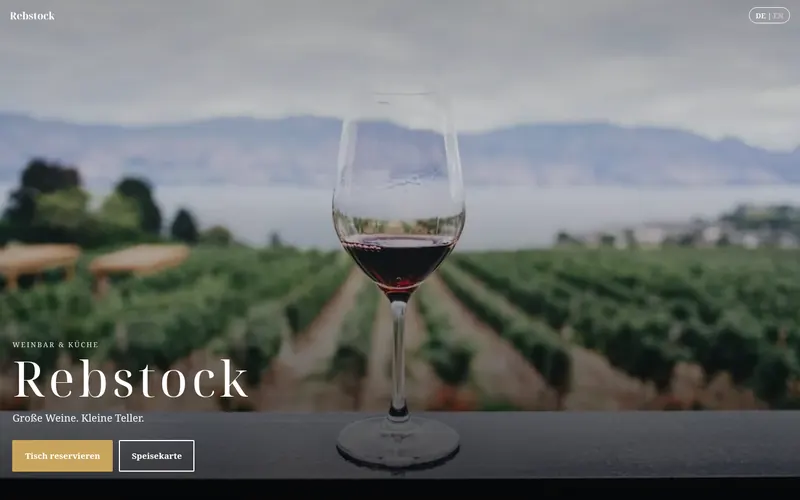
Rebstock
A wine bar and kitchen in bordeaux and gold, with a quiet fine-dining layout.
Open demo -
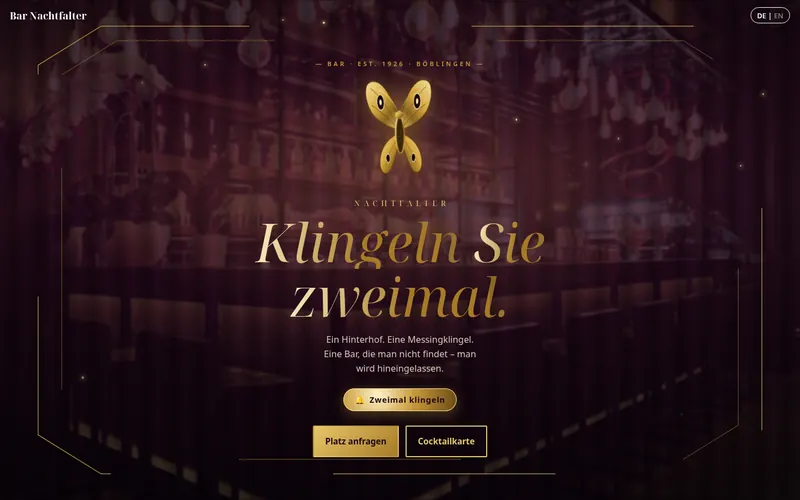
Nachtfalter
A cocktail bar in velvet and gold, with Art Deco framing and a brass-bell entrance.
Open demo -
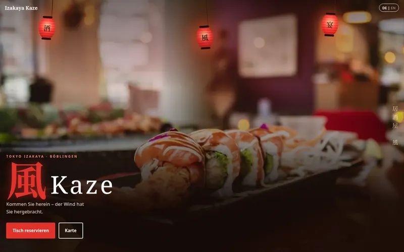
Izakaya Kaze
A Japanese izakaya that opens with a noren curtain and hanging lanterns.
Open demo -
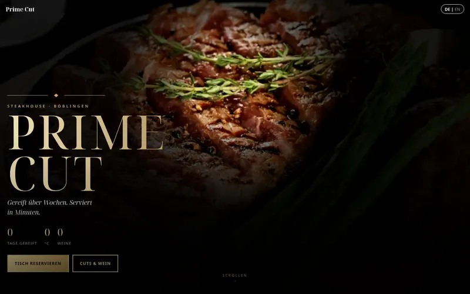
Prime Cut
A premium steakhouse in black marble and brass, with a spotlight that follows the scroll.
Open demo